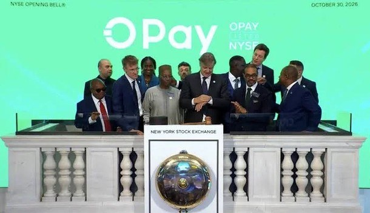

BREAKING: OPay post-IPO trading halted after raising $304 million

OPay’s shares did not begin trading on the New York Stock Exchange on Friday, October 30, as scheduled, despite the Nigeria-focused payments company having completed its $304 million U.S. initial public offering. An exchange message feed displayed a halt with news pending, and showed no executed trades. The reason for the halt and a new start time for trading were not stated.
The offering comprised 16 million American depositary shares, priced at $19 each. That was the bottom of OPay’s previously announced range of $19 to $21 per share. As of 2 p.m. in New York on Friday, the shares were indicated to open between $16.25 and $16.75—below the IPO price. The offering had valued the digital financial services provider at approximately $4 billion.
The delay contrasts with earlier reports that trading had commenced. OPay had priced its IPO and held an opening-bell ceremony, but the shares had yet to trade, according to the latest account. The offering had been scheduled to begin on October 30 under the ticker OPAY.
The company has also proposed a secondary listing on the Nigerian Exchange Limited, which would follow completion of its primary U.S. listing. OPay’s board and shareholders had approved the proposal, intended to provide Nigerian investors with access to the company’s shares while it maintains its primary listing in the United States.
Source: Nairametrics